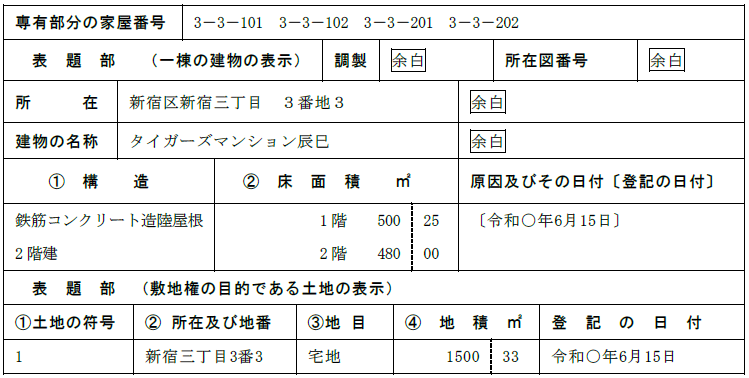
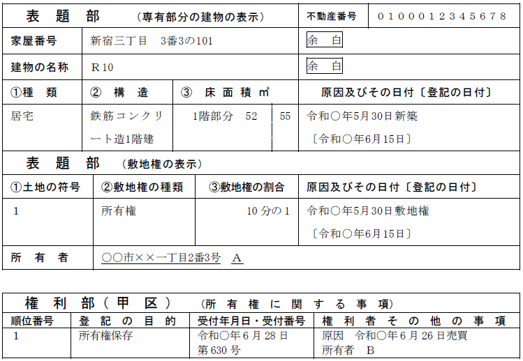
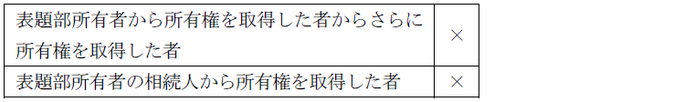
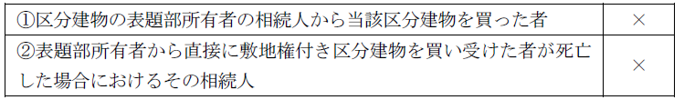
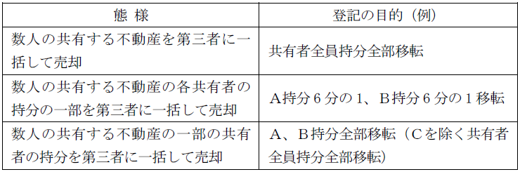

第１編 各 論
第１章 所有権の登記
第１節 所有権保存の登記
区分建物の場合、表題部所有者から所有権を取得した者も、所有権保存の登記を申請することができる（74条2項前段）。
なお、74条2項による保存登記ができる場合であっても、表題部所有者が74条1項1号保存登記をすることができる。
【申請例5 所有権保存 不動産登記法74条2項の申請（敷地権付き区分建物）】
事例： Ａが、自分の土地の上に敷地権付き区分建物を建てた（当該建物の表示の登記は、なされている。）。そして、令和○年6月26日、Ａは、Ｂに当該建物の一部屋を売却した。Ｂは、司法書士に登記の申請を依頼し、令和○年6月28日に登記の申請がなされた。建物の課税標準の額は、金1000万円である。敷地の課税標準の額は、金1億円で、敷地権の割合は、10分の1である。


1. 申請情報の内容
(1) 敷地権付き区分建物の場合
①登記原因及びその日付
不動産登記法74条2項による敷地権付き区分建物の所有権保存の登記は、敷地権の移転の登記の実質も有するので、原因及びその日付を記載する必要がある（76条1項ただし書）。
②申請人
表題部所有者から直接所有権を取得した者

③添付情報
ⅰ 登記原因証明情報（不登令7条3項1号括弧書、不登令別表29添付情報ロ）
不動産登記法74条2項による敷地権付き区分建物の所有権保存の登記は、敷地権と専有部分の移転の登記の実質も有するので、登記原因証明情報の提供が必要である。
登記原因証明情報には、建物と敷地権である土地の権利とについて同一の処分がされたことが表示されていなければならない。この場合の登記原因証明情報は、区分建物の所有権の移転と敷地権の移転という2つの内容を有し、その双方の権利が同一の原因によって移転したことを証することが必要になるからである（昭58.11.10民3.6400）。
ⅱ 承諾証明情報（不登令別表29添付情報ロ）
敷地権付き区分建物の所有権保存の登記は、敷地権の移転の登記の実質も有するが、単独申請であり、登記の真正を担保するため、当該敷地権の登記名義人の承諾を得なければならない（74条2項後段）。そのため、敷地権の登記名義人の承諾を証する当該登記名義人が作成した情報を提供する。
ⅲ 住所証明情報（不登令別表29添付情報ハ）
④適用法令
所有権保存登記であるから、根拠法令を記載する（不登令別表29申請情報）。
⑤登録免許税
区分建物：不動産の価額×4/1000（登免法別表1.1.(1)）
敷地権である土地の共有持分：土地の価格×持分の割合×20/1000（敷地権が所有権の場合※）
敷地権については、所有権移転の実質があるからである（登免法別表1.1.(2)ハ）。
※敷地権が地上権又は賃借権の場合：土地の価格×持分の割合×10/1000
(2) 敷地権の登記のない区分建物の場合
【申請例6 敷地権のない区分建物についての所有権保存の登記の申請】
事例： Ａが、自分の土地の上に区分建物を建てた（当該建物の表示の登記は、なされている。敷地権の表示は存在しない）。Ａは、Ｂに当該建物の一部屋を売却した。Ｂは、司法書士に登記の申請を依頼し、令和○年6月28日に登記の申請がなされた。建物の課税標準の額は、金1000万円である。
①登記原因及びその日付
登記原因といえるような法律行為がないため、表示しない（76条1項本文）。
②申請人
表題部所有者から直接所有権を取得した者
③添付情報
ⅰ 所有権取得証明情報（不登令別表29添付情報イ）
転得者名義で所有権保存登記をした場合、表題部所有者が所有権保存登記をすることはできなくなるため、不利益を受ける表題部所有者が作成した証明書を添付させて、本当にその申請人が登記申請適格を有するか確認して登記の申請を担保しようとするものである。
ⅱ 住所証明情報（不登令別表29添付情報ハ）
※登記原因証明情報の提供を要しない（不登令7条3項1号）。
③適用法令
所有権保存登記であるから、根拠法令を表示する（不登令別表29申請情報）。
2. 登記申請の可否
(1) 表題部所有者から「直接」所有権を取得していなければならない（74条2項前段）。

(2) 敷地権の表示の登記をした建物の登記記録の表題部にＡが所有者として記録されている場合において、ＢがＡからその持分2分の1を譲り受けたときは、Ａ及びＢは、両名を名義人とする所有権保存登記を申請することができるか？
→できない。この場合、Ａ名義に所有権保存登記をした後、Ｂへの所有権一部移転登記を申請すべきである（登研486P.134）。
第２節 所有権移転の登記
Ⅰ 所有権移転の登記（特定承継）
売買によって所有権移転の効果が生じるので、売主は、買主に対して所有権移転登記に協力する義務を負う。
1. 所有権移転
※【申請例1 所有権移転 売買】を参照
2. 共有者の１人からの持分の取得
【申請例7 所有権移転 売買（共有者の持分全部移転）】
事例： Ａが、Ｃと共有する甲土地の自己の持分（持分2分の1）を、令和○年6月28日、Ｂに売却した。土地の課税標準の額は、金1000万円である。
(1) 登記の目的
持分の全部が移転した場合：「○○持分全部移転」
持分の一部が移転した場合：「○○持分一部移転」
(2) 申請人
登記権利者に移転する持分を記載する。
(3) 登録免許税
移転した持分の価額×20/1000（登免法別表1.1.(2)ハ）
課税価格に「移転した持分の価格」と記載する。
3. 一の申請情報による2人以上の共有持分の移転の登記
【申請例8 所有権移転 売買（共有者全員の持分全部移転）】
事例： ＡＢが、共有土地を、令和○年6月28日に、Ｃに売却した。土地の課税標準の額は、金1000万円である。
(1) 申請情報の内容
(a) 登記の目的

(b) 申請人
共有者全員持分全部移転の場合、持分は記載しない。
不動産の共同購入者の1人は、買主全員のために、売主と共同して所有権移 転登記を申請することはできない。数人が共同して不動産を買い受けた場合の所有権移転の登記の申請は、買受人全員と売主が共同してすべきである（登研543P.150）。
(2) 一括申請ができない場合
共有者の一部の者の持分のみを目的として第三者の権利に関する登記（ｅｘ．抵当権設定、差押えなどの処分制限の登記）がなされている場合、共有者の当該持分と第三者の権利の目的となっていない他の共有者の持分の移転登記は、一括申請できない（昭37.1.23民甲112）。一括申請してしまうと、その第三者の権利に関する登記が、新たに持分を取得した者の持分のどこを目的としているかがわからなくなってしまうからである。
同一人が数回に渡って持分移転の登記を受けた場合で、そのうちの一部の持分が第三者の権利の目的となっているときも同様である。この場合、例えば、登記の目的を「Ｘ持分一部（順位3番で登記した持分）移転」として、移転する持分を特定すればよい（昭58.4.4民3.2252）。
(3) 相続の場合
被相続人（Ｘ）が数回に渡って持分移転の登記を受け、そのうちの一部の持分が第三者の権利の目的となっている場合は、相続を原因とする所有権（Ｘ持分全部）の移転登記を申請することができる。
相続を登記原因とする所有権（又はＸ持分）一部移転登記を申請することはできないからである（昭30.10.15民甲2216参照）。
その後、相続人の持分のうち第三者の権利の目的となっている（なっていない）持分のみを移転したときは、例えば、登記の目的を「Ｙ持分一部（順位4番から移転した持分）移転」のようにして、持分一部移転登記を申請することができる（平11.7.14民3.1414）。
4. 権利消滅の定めがある場合
登記の目的である権利に解除条件又は終期が付されている時はその旨を申請情報の内容としなければならない（59条5号、不登令3条11号ニ）。
ex．「特約 買主○○が死亡したときは所有権移転が失効する」
上記の例で、実際に買主が死亡した場合、所有権の抹消登記ではなく、買主から売主への所有権移転登記を申請する。なお、当該移転登記は売主と買主の相続人全員が共同して申請する。